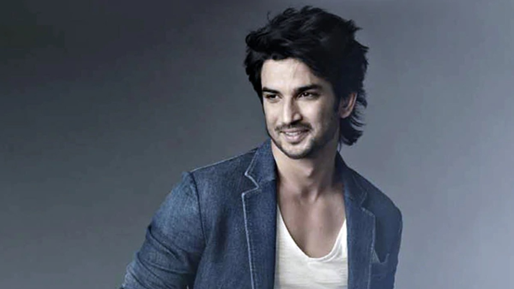

Sushant Singh Rajput
My mother used to tell me that your life is a story that you tell yourself. I am gonna make sure or atleast try that this story is worth telling.

Actor, Engineer (1986–2020)
Things to know About Sushant Singh Rajput:
- Sushant Singh Rajput (21 January 1986 – 14 June 2020) was an Indian actor who is best known for his work in Hindi cinema.[1] He has starred in a number of commercially successful Bollywood films such as M.S. Dhoni: The Untold Story (2016), Kedarnath (2018) and Chhichhore (2019).
- Rajput started his career after dropping out of his engineering course at the Delhi College of Engineering and entering the theatre industry in Mumbai.
- He moved on to feature in Hindi television serials, his debut show was the romantic drama Kis Desh Mein Hai Meraa Dil (2008), followed by the lead role in the soap opera Pavitra Rishta (2009–2011).
- He made his Bollywood debut in the film adaptation Kai Po Che! (2013) which became a commercial and critical success.
- Followed by his starring role in the romantic comedy Shuddh Desi Romance (2013) and the role of the titular detective in the action thriller Detective Byomkesh Bakshy! (2015).
- He has also featured in the starring role in a number of other films such as the reincarnation drama Raabta (2017), the historical drama Sonchiriya (2019) and the action thriller Drive (2019).
- His highest-grossing releases came with a supporting role in the satire PK (2014), and from the titular role in the sports biopic of Mahendra Singh Dhoni.
- For his performance in the latter, he received his first nomination for the Filmfare Award for Best Actor and became the winning nomination at the Indian Film Festival of Melbourne.
- Apart from acting, he was the founder of a non profit organisation and has been credited as the co-founder of a technological startup.
- Rajput was reportedly an avid reader who was deeply interested in astrophysics and won the National Olympiad in Physics.He secured an admission in the Delhi College of Engineering (later renamed to Delhi Technological University) to pursue a Bachelor of Engineering degree in mechanical engineering.
"I am not lost, I am very much alive."
-- Sushant Singh Rajput
If you have time, you should read more about this incredible human being on his
Wikipedia entry.